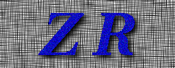

|  |
get_radar_data_over_gauge:
Extract Radar Windows and Convective/Stratiform
Classifications |
Updated: August 28, 1998.
Synopsis
get_2A53_data_over_gauge [-v] [-S site_name] [-x gauge_win_xmax] [-y gauge_win_ymax]
[-c rain_class_type] [-g gauge_locations_top_dir]
2A-53_granule_hdf first_r_intermediate_outfile
Description
This program is used to extract rain map (2A-53)
data over gauges. The primary function is to compare the gauge accumulations
with the rain map accumulations and to plot the time series of the accumulations
for direct comparison gauge by gauge.
first R intermediate file which will be used
by the radar/gauge merging program, merge_radarNgauge_data
.
It sould be noted that this program functions nearly identically as
get_radar_data_over_gauge. The only difference is that a 2A-53 granule
is input rather that either of 2A-54 and 2A55. In this way
the first_r_intermediate_outfile is formatted identically as the first_zr_intermediate_outfile
with the only differences being:
-
One rain type is used. Stratiform. This is meaning less for
plotting the curves because the plots are of rain accumulation. Therefore,
it is not necessary to have the 2A-54 map available merely to compare the
data with the gauges.
-
The data in the first_r_intermediate_outfile is rain-rate in mm/hr.
Options
-S Specify site name. Default: get
from 2A-55 file.
-x Specify the X length of the
gauge window in km. Default: 4.0
-y Specify the Y length of the
gauge window in km. Default: 4.0
-c Specify rain classifications
number (Uniform; conv/strat). Default:
conv/strat
-g Top directory of gauge site
locations data. Default: $GVS_DATA_PATH. The site locations data
files are actually in a subdirectory called sitelist but don't specify
that here. Specify the directory where 'sitelist/' resides. The default
value for $GVS_DATA_PATH is /usr/local/trmm/GVBOX/data.
Inputs
-
2A-53_granule_hdf2A-53
product.
-
Gauge site locations information. See option -g
in the Options section.
Temporary Files or Directories
None.
Output
first_r_intermediate_outfile
This file will be appended or created if it does not exist. It contains
radar data over gauges along with a single rain type.
Return Value
get_2A53_data_over_gauge returns
0 upon successful completion; 2 upon interruption; non-zero, otherwise.
Authors
-
Mike Kolander, Space Applications Corporation (SAC), NASA/GSFC/TRMM
Office
-
John H. Merritt, Space Applications Corporation
(SAC), NASA/GSFC/TRMM Office
-
Ngoc-Thuy Nguyen, Science Systems and Applications Inc.(SSAI), NASA/GSFC/TRMM
Office